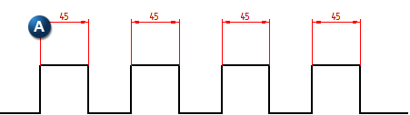
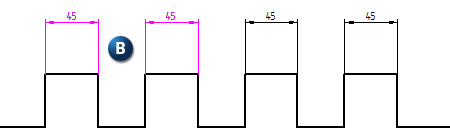
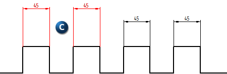

Remove from Alignment Set command
You can use the Remove from Alignment Set command to remove one or more selected dimensions from any alignment set while immediately placing them in a new alignment set. The command is located on the Home tab in the Dimension group.
In the illustration below, four dimensions are in a single alignment set (A).

Two dimensions (B) are selected to be removed from the original alignment set and placed in their own.

After using the command, the two dimensions (C) are placed in their own alignment set.

You can select the command before selecting the dimensions, or you can select the dimensions before the command.
-
Maintain Alignment Set must be turned on for new alignment sets to be created immediately after command is carried out.
-
The Remove from Alignment Set command can be added to the command bar or radial menu.